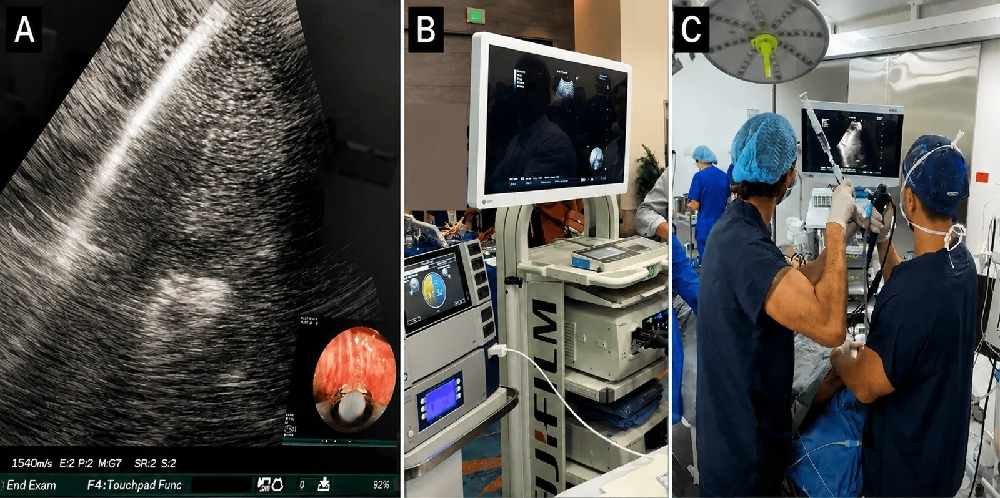
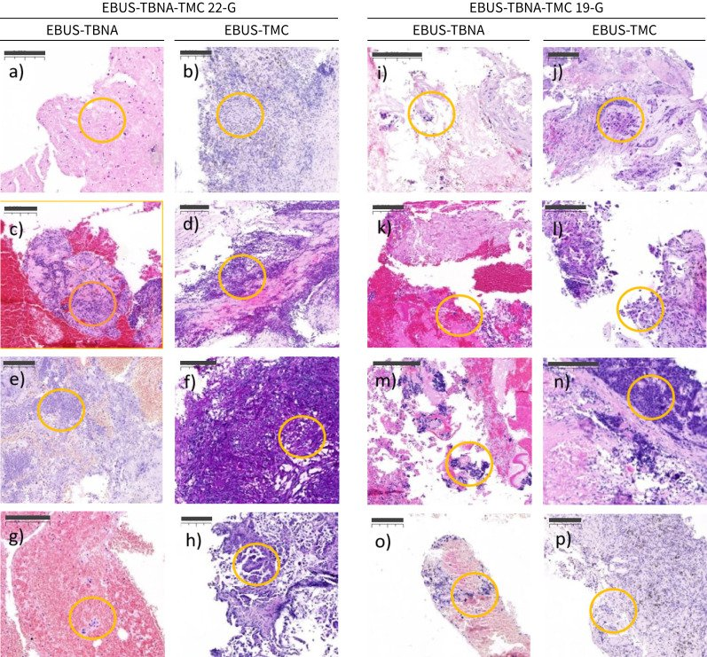

044 — Cryobiopsy trung thất qua EBUS: lấy mô lớn khi TBNA không đủ / EBUS-guided transbronchial mediastinal cryobiopsy (EBUS-TMC)
Tags: pattern:hach-trung-that vung:trung-that protocol:EBUS-TBNA protocol:cryobiopsy protocol:ROSE score:EBUS-station-map
Mức chắc chắn (certainty): tổng hợp y văn (literature synthesis) — tổng hợp từ y văn mở 2025–2026 (ERJ Open Res, Respirology, Endosc Ultrasound, Cureus) gồm 1 RCT ở sarcoidosis, 2 nghiên cứu tiến cứu và 1 loạt ca thực hành; có gắn hình thái ca nguyên văn (ảnh thủ tục và ảnh mô học đối chiếu).
1. Tổng quan — vì sao kim 22–19 G vẫn "không đủ", và cryo sửa được gì
- Vấn đề của EBUS-TBNA (kim chọc hút): kim lấy tế bào (cytology), mảnh mô nhỏ, dập nát do cơ chế cắt–hút và mất kiến trúc mô (architecture). Hệ quả định lượng:
- U lympho (lymphoma): TBNA đơn thuần độ nhạy rất thấp — trong một loạt 40 ca u lympho trung thất, TBNA 15%, TBNA + flow cytometry 25%, trong khi cryobiopsy 95%; ở ca tái phát cryo 100% vs TBNA 14% / TBNA+flow 41%.
- Sarcoidosis: phát hiện u hạt không hoại tử (non-necrotising granuloma) — cryo 89,8% vs TBNA 78,1% (RCT 128 bệnh nhân, giai đoạn I/II).
- Hạch trung thất nói chung: cryo 91,1–93,3% vs TBNA 68,8–77,7% (nghiên cứu tiến cứu 90 bệnh nhân, 2 cỡ kim).
- TẠI SAO cryobiopsy lấy được mô tốt hơn (theo Argon — vật lý + mô học):
- Đầu dò cryo làm lạnh theo hiệu ứng Joule–Thomson (khí nén giãn nở trong đầu dò) → nhiệt độ đầu dò giảm sâu trong vài giây. Mô tiếp xúc đông đặc nhanh, dính chặt vào đầu dò, rồi được kéo ra nguyên khối khi rút probe.
- Vì mô đông cứng trước khi bị kéo, lực cắt dọc theo mặt phẳng ít hơn kim hút → ít dập nát (crush artefact), giữ kiến trúc (nang, u hạt, mô đệm, biểu mô tuyến) và đủ mô cho hoá mô miễn dịch (IHC) + sinh học phân tử.
- Kích thước mẫu thực tế: đường kính trục dài 3,5 ± 0,9 mm (kim 22 G) và 3,6 ± 1,1 mm (kim 19 G) — lớn hơn nhiều mảnh cytoblock thông thường; nhưng mẫu > 4 mm không cải thiện thêm chất lượng mô học hay tỷ lệ chẩn đoán.
- Kỹ thuật "đường hầm" (tunnel) — điểm khác biệt cốt lõi: cryoprobe 1,1 mm không tự xuyên qua thành phế quản. Trình tự: chọc kim TBNA (22 G hoặc 19 G) vào hạch để tạo đường hầm → rút kim, giữ đường hầm → luồn cryoprobe qua đường hầm vào trong hạch dưới hướng dẫn EBUS → làm lạnh 3–5 giây → rút probe + mảnh mô. Vì vậy kỹ thuật này bắt buộc làm ngay trong cùng một thì với TBNA, không phải "chọc lại từ đầu".
- Ngưỡng định lượng cần nhớ:
- Thời gian làm lạnh chuẩn trong nghiên cứu: 3–5 giây; đường kính probe 1,1 mm; kim tạo đường hầm 22 G (linh hoạt, hợp tổn thương xa) hoặc 19 G (hạch trung tâm, đường hầm rộng hơn).
- Số lần chọc TBNA trước đó: 3 lần (chuẩn trong nghiên cứu tiến cứu).
- Thời gian thủ thuật: 25,1 ± 3,9 phút (22 G) vs 26,7 ± 5,3 phút (19 G) — không khác biệt (p = 0,11).
- Tỷ lệ chẩn đoán mô học trong thực hành thật (118 ca): 92,4%; PD-L1 làm được ở 37,3%.
- Biến chứng (118 ca): tràn khí trung thất 11,9%, co thắt phế quản 5,9%, tràn khí màng phổi 4,2% — không có tràn máu trung thất, không nhiễm trùng. Ở nghiên cứu 90 ca: chảy máu nhẹ < 10 mL 6/45 + 5/45, trung bình 10–40 mL 2/45 + 1/45, nặng > 40 mL 0; không tràn khí màng phổi, không tràn khí trung thất.
2. Mẫu hình + chẩn đoán phân biệt theo bối cảnh (gamut)
- Nguyên tắc chọn bệnh cảnh: cryobiopsy không thay thế TBNA cho chẩn đoán–phân giai đoạn ung thư thông thường; nó giải quyết nhóm cần KIẾN TRÚC MÔ:
- Nghi u lympho (lymphoproliferative disorder): hạch lớn, nhiều hạch, triệu chứng B, tái phát sau điều trị — cần phân týp (WHO) và IHC.
- Sarcoidosis / bệnh u hạt: cần thấy u hạt không hoại tử + tế bào khổng lồ; TBNA chỉ thấy tế bào biểu mô rải rác.
- U hiếm / u mô mềm trung thất: schwannoma, u tuyến ức, sarcoma, u mạch — cần kiến trúc + IHC.
- Ung thư phổi cần sinh học phân tử rộng: PD-L1, EGFR/ALK/ROS1, NGS — mô nhiều hơn, ít dập nát hơn.
- Nhiễm trùng khó (lao, nấm, IgG4): cần mô + nhuộm đặc biệt (AFB, PAS/Grocott, IgG4/IgG ratio).
- Gamut theo hình thái hạch trên EBUS: hạch đồng nhất giảm hồi âm (di căn/lymphoma) — hạch có vùng hoại tử/lỏng (lao, áp-xe, di căn vảy) — hạch tăng hồi âm rải rác (anthracosis, bụi than — bẫy PET dương tính giả) — hạch mềm, mất ranh giới (xâm lấn trung thất).
- Nhóm "TBNA âm mà vẫn nghi": lymphoma, sarcoidosis, u thần kinh, bệnh mô liên kết, bụi than (anthracosis) — đây chính là chỉ định cryobiopsy mạnh nhất.
3. Bảng so sánh phân biệt (ma trận đối chiếu)
| Thực thể / kỹ thuật | Hình ảnh & mô học điển hình | Chốt vào (rule-in) | Chốt loại (rule-out) | Gợi ý xác nhận |
|---|---|---|---|---|
| EBUS-TBNA (kim 22/19 G) | Cytoblock: cụm tế bào, ít mô đệm, dập nát; đủ cho tế bào học + IHC giới hạn | Có tế bào ác tính điển hình + IHC đủ (adenocarcinoma, SCC) | Chỉ có tế bào biểu mô rải rác / không thấy kiến trúc → chưa loại sarcoidosis/lymphoma | ROSE tại chỗ; 3 lần chọc; flow cytometry nếu nghi lymphoma |
| EBUS-TMC (cryobiopsy 1,1 mm) | Mảnh mô liền, kiến trúc nguyên vẹn, mô hạt/u hạt, mô đệm; mẫu ~3,5 mm | Thấy u hạt không hoại tử, kiến trúc u lympho, mô u nguyên vẹn + IHC dương | Chỉ viêm mạn, không thấy u → âm tính giả do lấy trượt (không loại trừ u) | 2 lần cryo trở lên; IHC + molecular; đối chiếu PET/CT |
| EBUS-TBNB (kẹp sinh thiết qua nội soi) | Mảnh nhỏ bị nghiền, thường < 2 mm | Có mô nhưng ít | Không đủ kiến trúc → không kết luận lymphoma | Ít dùng khi đã có cryo |
| Mediastinoscopy / VATS | Mô lớn, kiến trúc đầy đủ, lấy được toàn bộ hạch | Chẩn đoán mô học đầy đủ khi các cách trên thất bại | — | Tiêu chuẩn vàng cho lymphoma; xâm lấn hơn, dính khi mổ lại |
| Chẩn đoán khác trong hạch (anthracosis, IgG4, lao) | Mô bụi than, xơ; IgG4+ tương bào; u hạt hoại tử | Đặc điểm mô học đặc hiệu | PET dương tính mạnh không loại trừ lành tính | Nhuộm AFB/PAS, IgG4/IgG > 40%, theo dõi |

(A) EBUS: đầu dò cryo nằm trong hạch đích (ảnh nhỏ: hình nội soi khi làm lạnh); (B) hệ thống EBUS + máy cryo; (C) hai người thao tác — một giữ ống soi/định hướng, một luồn và rút probe. Nguồn: Echeverri-Hoyos J et al., Cureus 2026, PMC13626287 Fig. 1, CC BY 4.0.Ba dấu hiệu "chốt" khi đọc kết quả
- Kiến trúc mô còn nguyên (preserved architecture) — thấy nang, tuyến, mô hạt, lớp tế bào thay vì chỉ cụm tế bào rời.
- IHC dương tính rõ trên mảnh lớn — đặc biệt CD20/CD3, Ki-67, cytokeratin, PD-L1; mảnh lớn cho phép đếm tế bào trên diện rộng.
- Mẫu không dập nát ở bờ — bờ mô sắc, ít "bùn" tế bào; đây là khác biệt vật lý của cryo so với kim hút.
4. Protocol + thuật toán quyết định
- Chuẩn bị: CT ngực/PET-CT gần nhất; đông máu (INR, tiểu cầu); ngừng kháng đông theo quy ước; đánh giá nguy cơ chảy máu & tăng áp phổi; bệnh nhân nhịn ăn, đường truyền, monitor.
- Thiết lập: ống nội soi phế quản EBUS đầu dò tuyến tính, gây mê vừa phải (midazolam + propofol) hoặc gây mê toàn phần; ống nội khí quản 7,5 mm không bóng để luồn ống soi; hai người thao tác.
- Trình tự chuẩn (theo nghiên cứu tiến cứu):
- Xác định hạch/hối hạch trên EBUS — ghi trạm (station), kích thước, mức tưới máu.
- 3 lần TBNA (22 G hoặc 19 G) → cytology ± ROSE.
- Tạo đường hầm bằng chính kim đó → luồn cryoprobe 1,1 mm qua đường hầm vào hạch dưới EBUS.
- Làm lạnh 3–5 giây → rút probe + mảnh mô → formalin (mô học/IHC) và mảnh riêng cho molecular nếu cần.
- Lặp 2 lần cryo trở lên ở cùng hạch (nhiều lần → mẫu lớn hơn, nhưng > 4 mm không thêm giá trị).
- Kiểm tra chảy máu bằng nội soi trực tiếp; X-quang ngực sau thủ để loại tràn khí màng phổi/trung thất (theo quy trình nghiên cứu: X-quang + theo dõi 30 phút/lần, gọi điện 48 giờ, khám lại 2–4 tuần).
- Chọn cỡ kim: 22 G cho tổn thương xa/khó (trạm 11–12, thùy dưới), linh hoạt hơn; 19 G cho hạch trung tâm (trạm 4R, 7), đường hầm rộng hơn. Trong nghiên cứu, 2 ca phải đổi 19 G → 22 G vì không luồn được, và tổn thương trạm 12 làm tốt hơn với 22 G.
- Ngưỡng dừng / chuyển chiến lược:
- Đã có chẩn đoán mô học đủ (u hạt, lymphoma typ, IHC/molecular đủ) → dừng, tránh lấy thêm.
- Cryo chỉ viêm mạn mà vẫn nghi u → không kết luận âm; cân nhắc lấy trạm khác hoặc mediastinoscopy/VATS.
- Không tạo được đường hầm (hạch xa, dính, mạch máu giữa) → quay lại TBNA ± chọc xuyên phế quản khác, hoặc chuyển mổ.
flowchart TD
A["Hạch/hối hạch trung thất trên CT hoặc PET"] --> B["EBUS xác định trạm, kích thước, tưới máu"]
B --> C["3 lần TBNA 22G hoặc 19G + ROSE"]
C --> D{"ROSE hoặc cytology đã đủ chẩn đoán?"}
D -->|Đủ| E["Kết luận + molecular nếu cần ung thư"]
D -->|Chưa đủ| F{"Cần kiến trúc mô? lymphoma, sarcoidosis, u hiếm, molecular rộng"}
F -->|Có| G["Tạo đường hầm bằng kim, luồn cryoprobe 1,1 mm"]
G --> H["Làm lạnh 3-5 giây, rút mảnh, lặp 2 lần"]
H --> I{"Mô học đủ?"}
I -->|Đủ| J["Chẩn đoán + IHC/molecular"]
I -->|Không đủ hoặc chỉ viêm mạn| K["Không loại trừ u — lấy trạm khác hoặc mediastinoscopy"]
F -->|Không| L["Theo dõi hoặc chuyển chẩn đoán khác"]
5. Biến thể bình thường và cạm bẫy
- Cạm bẫy số 1 — "âm tính giả do lấy trượt" (sampling error): trong chính bài nguồn, một ca schwannoma: cytoblock gợi ý u tế bào hình thoi, nhưng cryobiopsy chỉ thấy viêm mạn và KHÔNG lấy được mô u. Bài học: cryo không bảo đảm lấy trúng — mảnh to vẫn có thể trượt u, nhất là u xơ/giàu mô đệm. Không bao giờ dùng kết quả "viêm mạn" để loại trừ u khi hình ảnh còn nghi.
- Cạm bẫy số 2 — khí trung thất (pneumomediastinum) không phải biến chứng hiếm: 11,9% trong loạt 118 ca (cao hơn nhiều so với cảm nhận "thủ thuật an toàn"), dù không có ca nào cần can thiệp. Phải khám cổ/ngực, nghe tim, X-quang sau thủ và giải thích trước cho bệnh nhân.
- Cạm bẫy số 3 — chảy máu "không nặng" nhưng có: trung bình 10–40 mL gặp ở 2/45 + 1/45; không có ca > 40 mL trong nghiên cứu, nhưng không được chủ quan với hạch tăng sinh mạch, hạch cạnh động mạch phổi/động mạch chủ.
- Cạm bẫy số 4 — coi cryo là "thay thế" TBNA: TBNA vẫn cần cho phân giai đoạn nhiều trạm (nodal map) và ROSE; cryo bổ sung, không thay thế. Làm cryo ở mọi trạm làm tăng thời gian/thủ thuật mà không tăng chẩn đoán.
- Cạm bẫy số 5 — mẫu lớn hơn ≠ chẩn đoán tốt hơn: > 4 mm không cải thiện chất lượng mô học/tỷ lệ chẩn đoán; đừng đánh đổi an toàn lấy kích thước.
- Cạm bẫy số 6 — hạch bụi than (anthracosis): mô học bụi than + xơ, có thể FDG dương tính mạnh giả u; đây là chẩn đoán lành tính hay gặp nhất trong loạt thực hành (14,4%). Đừng "điều trị ung thư" chỉ vì PET sáng.
- Cạm bẫy số 7 — vị trí không tạo được đường hầm: trạm 12 (thùy dưới) và tổn thương ngoại vi xa dễ thất bại; chọn 22 G hoặc chuyển hướng tiếp cận.
6. Tự lượng giá — Blind Quiz
Ca 1 — Hạch trạm 7, 22 mm, nghi lymphoma. Ảnh EBUS trong lúc làm thủ thuật — mô tả trình tự bạn thấy.
- Gợi ý lâm sàng (clinical context): nam 59 tuổi, hạch trung thất lớn, sụt cân, không có u phổi nguyên phát.
- Câu hỏi: Bước nào phải làm TRƯỚC khi luồn cryoprobe? Vì sao cryoprobe không tự xuyên qua thành phế quản? Hai người thao tác để làm gì?
Bấm để hiện đáp án (findings + chẩn đoán)
- Dấu hiệu (findings): (A) đầu dò cryo nằm trong hạch dưới hướng dẫn EBUS; (C) hai người: một giữ ống soi và định hướng EBUS, một luồn/rút probe.
- Trình tự: chọc kim TBNA tạo đường hầm → rút kim → luồn cryoprobe 1,1 mm qua đường hầm → làm lạnh 3–5 giây → rút mảnh.
- Vì sao: probe 1,1 mm không có mũi sắc, cần đường hầm do kim 22/19 G tạo ra; làm lạnh gây dính mô và kéo ra nguyên khối, ít dập nát.
- Chẩn đoán (diagnosis): EBUS-TMC — chỉ định mạnh khi nghi lymphoma (độ nhạy cryo 95% vs TBNA 15%).
- Nguồn ảnh: Echeverri-Hoyos J et al., Cureus 2026, PMC13626287 Fig. 1, CC BY 4.0.
Ca 2 — Cùng bệnh nhân, kết quả mô học: cột trái là TBNA, cột phải là cryobiopsy. Panel nào cho thấy lợi thế rõ nhất, panel nào là một THẤT BẠI?

- Câu hỏi: Ở (a) vs (b), vì sao TBNA chỉ thấy "tế bào biểu mô rời" còn cryo thấy u hạt nguyên vẹn? Ở (c) vs (d) có gì bất thường, và kết luận đúng phải là gì?
Bấm để hiện đáp án (findings + chẩn đoán)
- Dấu hiệu (findings): (a) cytoblock — chỉ tế bào biểu mô rời rạc; (b) cryobiopsy — u hạt biểu mô không hoại tử, tạo thành nang rõ → sarcoidosis. (c) cytoblock gợi ý u tế bào hình thoi (schwannoma); (d) cryobiopsy chỉ viêm mạn, KHÔNG thấy mô u.
- Chẩn đoán (diagnosis): cryo thắng ở kiến trúc (u hạt, lymphoma, biểu mô tuyến), nhưng (c)–(d) là âm tính giả do lấy trượt — không được loại trừ u.
- Kết luận đúng: không dùng "viêm mạn" để loại trừ u; cần lấy trạm khác hoặc mediastinoscopy.
- Phản biện nguồn: đây là các cặp ảnh chọn lọc để minh họa, không phải tỷ lệ đại diện; tỷ lệ định lượng nằm ở phần (1).
- Nguồn ảnh: Oruqaj G et al., ERJ Open Res 2026, PMC13148967 Fig. 4, CC BY-NC 4.0.
Ca 3 — Hạch trạm 4R, 30 mm, không có ROSE. Bạn chọc 3 lần TBNA: cytology chỉ nói "tế bào không điển hình". Làm gì tiếp trong CÙNG thì?
- Câu hỏi: Ba lựa chọn (làm thêm TBNA trạm khác / cryobiopsy cùng hạch / hẹn mediastinoscopy) — chọn nào và vì sao? Ngưỡng nào khiến bạn dừng sau cryo?
Bấm để hiện đáp án (findings + chẩn đoán)
- Chọn: cryobiopsy cùng hạch ngay trong thì đó — đúng nguyên lý "đường hầm đã có", tránh thủ thuật lần hai; tỷ lệ chẩn đoán tăng từ 68,8–77,7% (TBNA) lên 91,1–93,3% (cryo).
- Nếu không có cryo: lấy thêm trạm khác + flow cytometry, hẹn mediastinoscopy nếu vẫn nghi lymphoma.
- Ngưỡng dừng: có chẩn đoán mô học đủ + IHC/molecular đủ; 2 lần cryo là đủ trong đa số; mẫu > 4 mm không thêm giá trị.
- Cảnh báo: tràn khí trung thất 11,9%, tràn khí màng phổi 4,2% → X-quang sau thủ.
Bài liên quan chéo
- 018 – EBUS-TBNA/EUS hạch trung thất
- 060 – Khối trung thất (ITMIG)
- 022 – Khối phổi & TNM
- 012 – Hạch trung thất
- 013 – Hạch nội phổi & phân biệt hạch–nốt
- 089 – Biến chứng & xử trí sau cryobiopsy trung thất qua EBUS
Ảnh
images/044_EBUS-TMC-technique_PMC13626287-Fig1-CCBY.jpg— CC BY 4.0.images/044_TBNA-vs-TMC-histology_PMC13148967-Fig4-CCBYNC.jpg— CC BY-NC 4.0.- Nguồn + giấy phép từng ảnh:
images/CREDITS.md; link gốc:sources.md.
Không dùng để chẩn đoán độc lập khi chưa có người hướng dẫn.